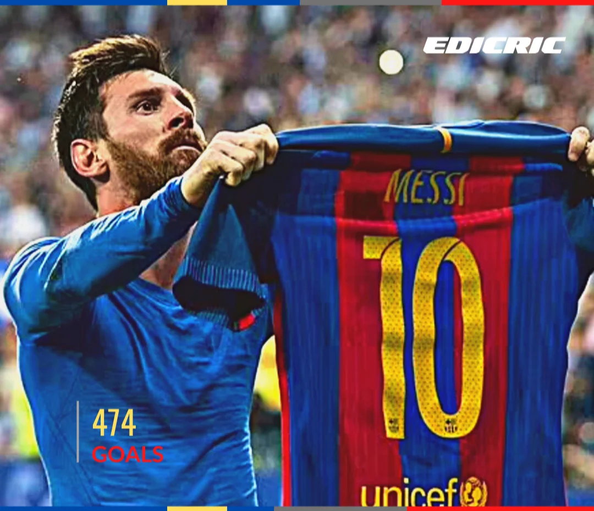
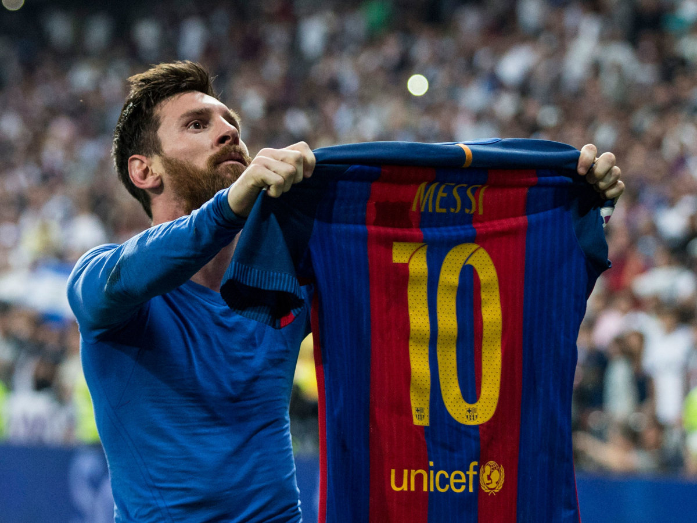

Quick Facts
Full Name: Lionel Andrés Messi
Born: June 24, 1987
Birthplace: Rosario, Argentina
Spouse: Antonella Roccuzzo (2017-present)
Children: Thiago, Mateo, and Ciro
Astrological Sign: Cancer
Early Life
Luis Lionel Andres “Leo” Messi was born on June 24, 1987, in Rosario,
Argentina. As a young boy, Messi tagged along when his two older
brothers played soccer with their friends, unintimidated by the bigger
boys. At the age of 8, he was recruited to join the youth system of
Newell’s Old Boys, a Rosario-based club.
ecognizably smaller
than most of the kids in his age group, Messi was eventually diagnosed
by doctors as suffering from a hormone deficiency that restricted his
growth. Messi’s parents, Jorge and Ceclia, decided on a regimen of
nightly growth-hormone injections for their son, though it soon proved
impossible to pay several hundred dollars per month for the
medication.
Club Teams: Barcelona, PSG, and Inter Miami
Messi played for FC Barcelona for 17 seasons before joining Paris Saint-Germain in 2021 for two seasons. In July 2023, he joined the MLS club Inter Miami.
FC Barcelona
FC Barcelona forward Lionel Messi celebrates after scoring in a
January 2006 match. He played for the club for 17 seasons.
FC Barcelona forward Lionel Messi celebrates after scoring in a
January 2006 match. He played for the club for 17 seasons.
At age 13, Messi signed with FC Barcelona. His first appearance
for the team was when he was 16. On May 1, 2005, Messi put himself in
the record books as the youngest player to ever score a goal for the
franchise.
Messi steered Barcelona to a wealth of success, most
notably in 2009, when the left-footer’s team captured the Champions
League, La Liga, and Spanish Super Cup titles. That same year, after
two consecutive runner-up finishes, he took home his first FIFA World
Player of the Year honor, as well as his first Ballon d’Or award, the
top European individual honor in football.
Messi became the
first Argentinian player to win the Ballon d’Or. Even the great
Maradona gushed about his fellow countryman. “I see him as very
similar to me,” the retired player told the BBC. “He’s a leader and is
offering lessons in beautiful football. He has something different
than any other player in the world.”
Amazingly, the soccer
wizard continued to improve, discovering new ways to elude defenders
while leading Barcelona to La Liga and Spanish Super Cup championships
in 2010 and 2011, as well as the ’11 Champions League title.
Messi embarked on an all-out assault on the record books in
2012. He became the first player to score five goals in a Champions
League match in early March, and a few weeks later, he surpassed Cesar
Rodriguez’s club-record 232 goals to become Barcelona’s all-time
leading scorer. By the end of the year, Messi had accumulated an
astounding 91 goals in club and international play, eclipsing the 85
netted in a single calendar year by Gerd Muller in 1972. Fittingly, he
broke another record when he was named the Ballon d’Or winner for the
fourth consecutive time.
In 2013, the soccer great came back to
earth somewhat due to the persistence of hamstring injuries, but he
regained his record-breaking form by becoming the all-time leading
scorer in La Liga and Champions League play in late 2014.
After
helping Barcelona achieve a historic second treble in 2015, he was
honored with his fifth Ballon d’Or trophy. Four years later, following
another La Liga title, Messi again established a new standard for
excellence by claiming his sixth Ballon d’Or.
On August 5, 2021,
FC Barcelona announced it couldn’t resign Messi due to the team’s
budget constraints and La Liga restrictions. Despite having voiced his
desire to leave the club the prior season, Messi bid a teary farewell
after 17 seasons: “This is really difficult for me after so many years
spent here, being here my entire life. I’m not ready for this.”
Paris Saint-Germain
Lionel Messi in his final match as a member of Paris Saint-Germain
in June 2023
Four days after the shocking news from FC Barcelona, Messi signed with
Paris Saint-Germain. The 34-year-old inked a two-year contract with
the French club. The move saw him reunite with former teammate Neymar
as well as the talented Kylian Mbappé.
Messi made his debut for the club on August 29, 2021, and scored
his first goal that September. PSG won two Ligue 1 titles with Messi.
Although his contract allowed for an optional third year at PSG, the
team announced it would release Messi as a free agent when the deal
expired on June 30, 2023. Earlier in the year, the club suspended and
fined Messi after he visited Saudi Arabia on an unauthorized trip.
This all but sealed fate on the soccer legend’s widely expected move.
Messi’s last game for PSG was June 3, 2023. In total, he started
in 72 games, notching 32 goals and 34 assists.
Inter Miami CF
Lionel Messi, seen here in a September 2023 game, has played for
Inter Miami since July.
On June 7, 2023, Messi told two Spanish media outlets he planned to
play for the MLS club Inter Miami CF, which is partially owned by
former soccer player David Beckham. “I have made the decision that I
am going to Miami,” Messi said at the time, per ESPN. Messi later told
Time he strongly considered joining a Saudi Arabian team before
deciding on Inter Miami.
A little over a month later, on July 16, the team officially
welcomed him on a 2.5-year contract that runs through the 2025 season.
The deal was reportedly worth around $150 million, including an annual
salary between $50 million and $60 million, a signing bonus, revenue
sharing with the league’s media partner, and team equity upon
retirement.
Argentina National Team
Lionel Messi in June 2005, at the start of his career with
Argentina’s national team.
In summer 2005, Messi quickly made a name for himself on his native
country’s under-20 squad. He led Argentina to the title in the FIFA
U-20 World Cup, scoring on a pair of penalty kicks to propel the team
over Nigeria. Less than two months later, he made his pro debut with
Argentina in an August friendly match against Hungary but played less
than two minutes before receiving a red card and being ejected from
the game.
For all his success with Barcelona, Messi repeatedly came under
fire for his inability to help Argentina’s national team win a major
title. In the 2014 World Cup, Argentina lost to Germany in the final,
though Messi was named player of the tournament that year. In 2016,
following Argentina’s second consecutive loss to Chile in the final of
the Copa America tournament, Messi announced he was ending his run
with the national team.
The soccer great eventually reversed his
decision, but his participation in the 2018 World Cup did not bring
that elusive title, as hoped. After Messi scored an early goal in a
2-1 win over Nigeria that helped his team advance from the group
stage, he was largely kept in check by France, his two assists not
enough to stave off a 4-3 defeat that sent Argentina packing.
The following year, after Messi heavily criticized the referees
in the wake of a 2-0 loss to Brazil in the Copa America semifinals,
the Argentine captain was slapped with a three-game ban by the South
American Football Confederation.
At last, in 2021 and 2022,
Argentina and Messi found enough traction to bring home trophies that
had long evaded them. First, the team won the Copa America—Argentina’s
first major title in 28 years—in August 2021, besting Brazil in the
final. Captain Messi tied for top goal scorer, alongside Colombia’s
Luis Diaz, and was named player of the tournament. The next year,
greater glory awaited at the 2022 FIFA World Cup in Qatar.
Lionel Messi kisses the trophy after Argentina won the 2022 FIFA
World Cup in Qatar.
Argentina captured the World Cup trophy on December 18, 2022, after a
thrilling game against France that ended in a penalty shootout. Messi
was named the Best FIFA Men’s Player for a second time and broke the
record for most World Cup appearances with 26 games. Six jerseys that
Messi had worn during the victorious championship run later sold for
more than $7.8 million at auction.
In fall 2023, Messi scored three goals in qualifying games for
the 2026 World Cup. However, as he nears the twilight of his career,
the soccer legend has adopted a realistic attitude about his future.
“As long as I feel that I am fine and I can continue contributing, I
am going to do it. Today, the only thing I think about is getting to
the Copa America well and being able to compete in it,” Messi said of
the 2024 tournament. “Then time will tell if I am [at the World Cup]
or not. I’m going to be at an age (39) that normally doesn’t allow me
to play in the World Cup.”
Achievements
8-time Ballon d'Or winner
6-time golden boot winner
4-time UEFA Champions League winner
10-time La Liga champion
Winner of the Copa América with Argentina in 2021
Winner of the World Cup with Argentina in 2022

Top scorer in La Liga history

Most goals scored in a calendar year

Winner of league one

Lionel Messi wins Leagues Cup with Inter Miami
Gallery


Personal Life
Off the field, Messi is known for his humility and philanthropy. He married his childhood sweetheart, Antonela Roccuzzo, and they have three children together. Messi is also involved in various charitable activities, including his own Leo Messi Foundation, which supports access to education and health care for vulnerable children.